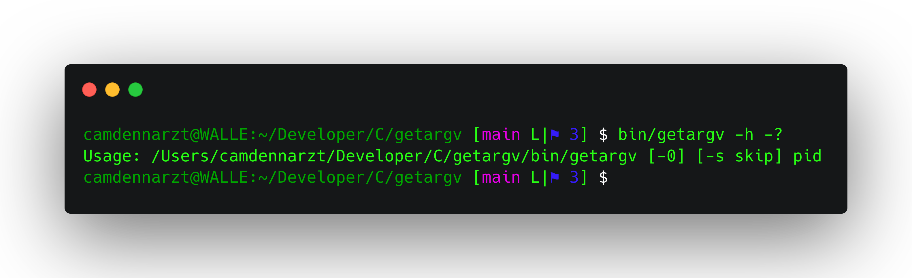

<div id="main" class="wrapper style1">
  <div class="container">
    <header class="major">
      <h2>Resilient to surprising situations</h2>
      <p>I've spent a lot of time making <code>getargv</code> able to handle edge cases</p>
    </header>
    <div class="row gtr-150">
      <div class="col-4 col-12-medium">

        <!-- Sidebar -->
        <section id="sidebar">
          <section>
            <h3>Fast</h3>
            <p><code>getargv</code> runs in approx <samp>1.2ms</samp> as measured by <code>hyperfine</code>. It does this by utilizing a zero-copy one-scan algorithm to run in <code>O(n)</code> time where <var>n</var> is the length of the arguments passed to the process you are inspecting. <code>getargv</code> allocates exactly one block of memory, and stops reading the buffer once it finds the end of the process' arguments. <code>getargv</code> also prints the buffer to <var>stdout</var> using pointers back to the original buffer, without copying.</p>
            <footer>
              <ul class="actions">
                <li><a href="/fast.html" class="button">Learn More</a></li>
              </ul>
            </footer>
          </section>
          <hr />
          <section>
            <a href="/interface.html" class="image fit"></a>
            <h3>Easy to use interface</h3>
            <p><code>getargv</code> has five flags, three of which are purely information about itself. You use the standard <kbd>-0</kbd> flag to print arguments <samp class="null">␀</samp> separated, the <kbd>-s</kbd> flag to strip leading arguments, the <kbd>-v</kbd> flag to print <code>getargv</code>'s version and either of <kbd>-h</kbd> or <kbd>-?</kbd> to print a usage string. That's it, that's the whole interface.</p>
            <footer>
              <ul class="actions">
                <li><a href="/interface.html" class="button">Learn More</a></li>
              </ul>
            </footer>
          </section>
        </section>

      </div>
      <div class="col-8 col-12-medium imp-medium">

        <!-- Content -->
        <section id="content">
          <a class="image fit"></a>
          <h3>Correctness as the First Priority</h3>
          <p>My impetus for <abbr title="I wound up adapting it from existing code, but I set out to create a tool">building</abbr> <code>getargv</code> was to parse a <abbr title="Process ID">PID</abbr>'s arguments that I didn't control, in a script; which required me to consider the different ways that the process could have been created. In doing so, I found some surprising edge cases which no-one else seems to have handled correctly, but <code>getargv</code> does.</p>
          <p>The test suite for <code>getargv</code> is currently <samp>1.92×</samp> <abbr title="as measured in lines">as big</abbr> as the source for the program itself. With <samp>100%</samp> line, function, and branch coverage. And I'm still expanding the test suite.</p>
          <p>Out of curiosity I went and looked for every use of <var>KERN_PROCARGS2</var> I could find on the internet. Every single case where the arguments are considered, is incorrect. 90 projects, and every project that uses them, all wrong.</p>
          <h3>Hall of shame</h3>
          <p>I've collected the projects that are incorrectly using the output of <var>KERN_PROCARGS2</var> <a href="/hallofshame.html">here</a>.</p>
          <h3>Edge cases handled by <code>getargv</code></h3>
          <ul>
            <li>Target process has an empty <code>argv[0]</code></li>
            <li>Target process has empty arguments</li>
            <li>Target process has no arguments</li>
            <li>Target process has huge arguments</li>
            <li>Invalid target <abbr title="Process ID">PID</abbr></li>
            <li>Insufficient permissions to target <abbr title="Process ID">PID</abbr></li>
            <li>Incorrect flags for <code>getargv</code></li>
            <li>System out of memory</li>
          </ul>
        </section>

      </div>
    </div>
  </div>
</div>
